Envie o CNIS do seu cliente e receba um Raio-X organizado com vínculos, contribuições, remunerações, indicadores e pontos de atenção reunidos em um só lugar — pronto para você revisar, complementar, salvar e imprimir.
Um passo a passo real de como o Raio-X Automático do CNIS transforma o documento do seu cliente em uma análise organizada, do envio do arquivo até o PDF final.
Aqui começa a análise. Você seleciona o arquivo do CNIS, identifica o cliente, adiciona a referência do caso e dá início ao processamento sem depender de planilhas, anotações soltas ou organização manual desde o primeiro passo.
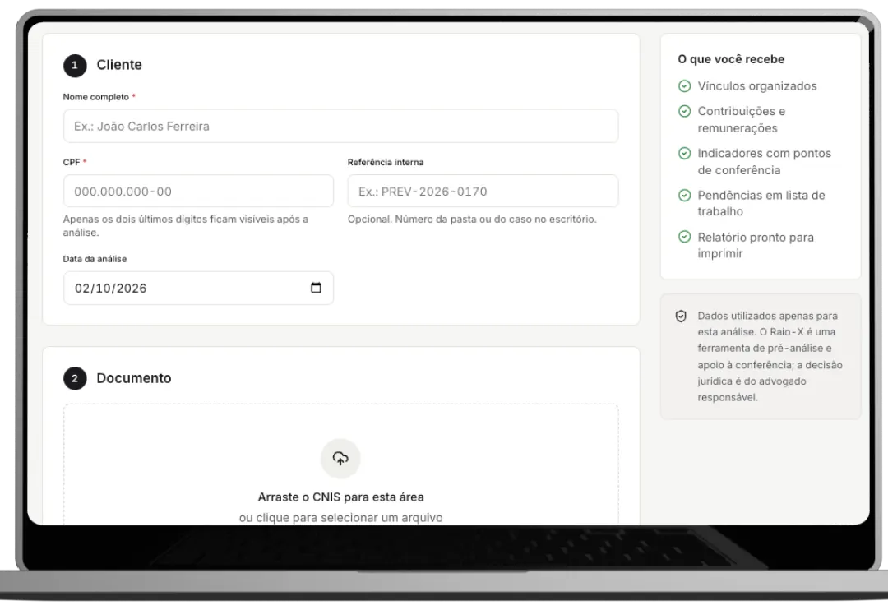
O sistema extrai os vínculos encontrados no documento e organiza tudo em uma visualização clara, facilitando a conferência de períodos, empregadores, tipo de vínculo e pontos que merecem atenção.
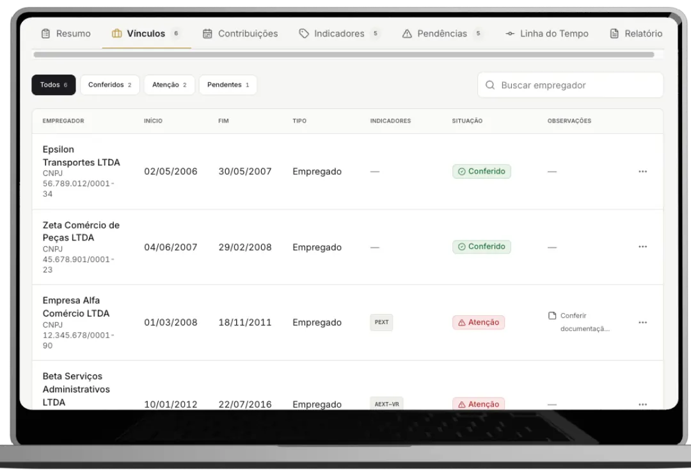
Em vez de analisar competências soltas e informações dispersas, o sistema separa contribuições e remunerações em uma estrutura visual mais fácil de revisar, ajudando a localizar lacunas, inconsistências e períodos que merecem olhar profissional.
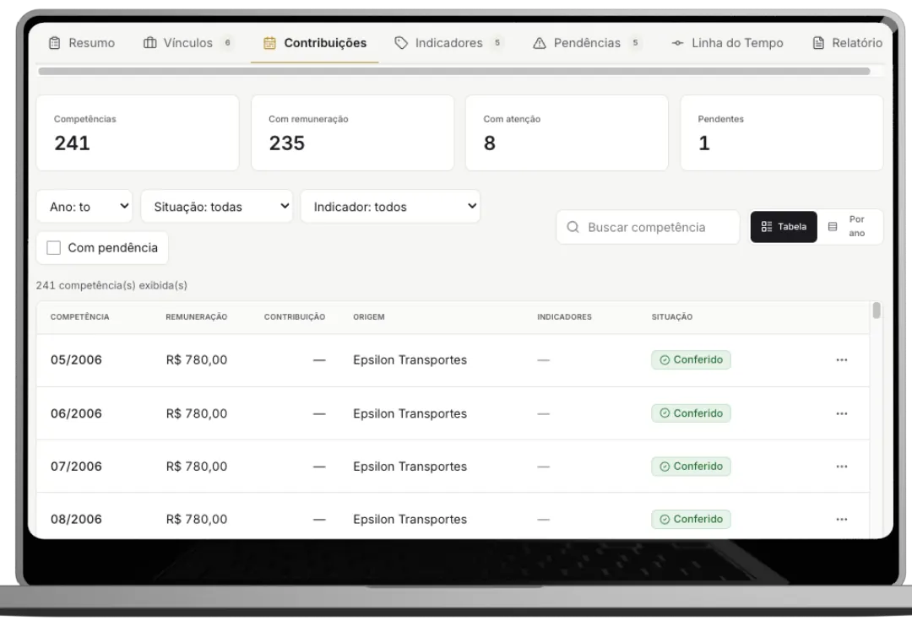
Um dos pontos mais valiosos do sistema é reunir os indicadores encontrados no CNIS em uma área organizada, mostrando o que apareceu, onde apareceu e o que precisa ser conferido em cada caso.
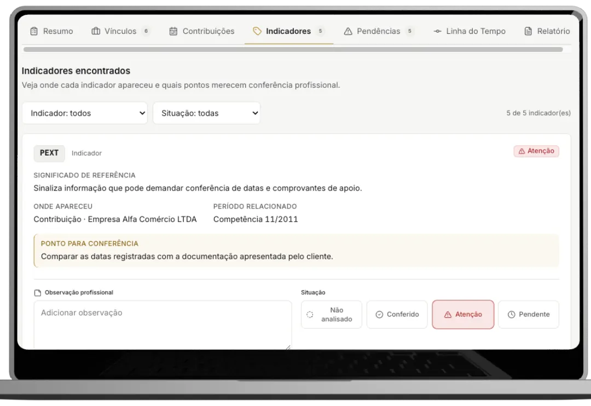
Tudo o que merece revisão vai para uma área centralizada. Isso ajuda o advogado a sair da simples leitura do CNIS e transformar a análise em uma lista prática de conferência e ação.
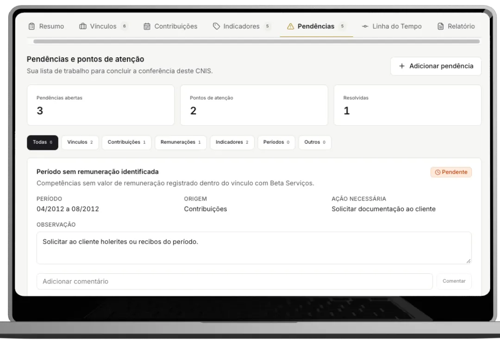
Ao final do processamento, o sistema gera uma visão resumida e estruturada do CNIS do cliente, reunindo os elementos mais importantes da análise em um documento claro, visual e pronto para revisão.
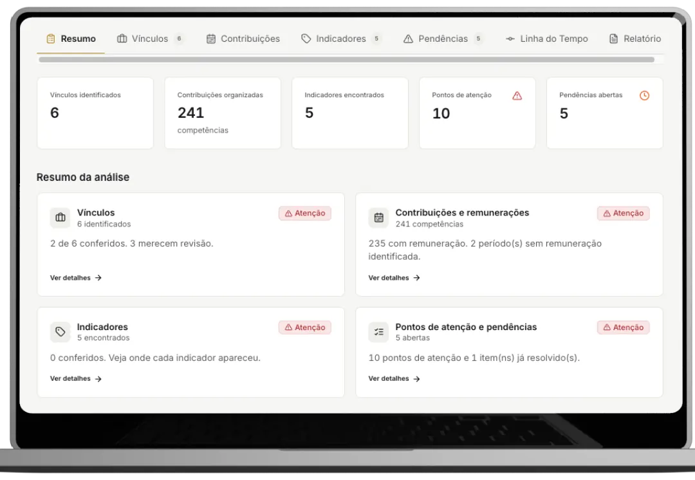
Depois da análise, você pode complementar observações, marcar itens como conferidos, salvar o caso e gerar uma versão organizada para impressão ou arquivamento junto à pasta do cliente.
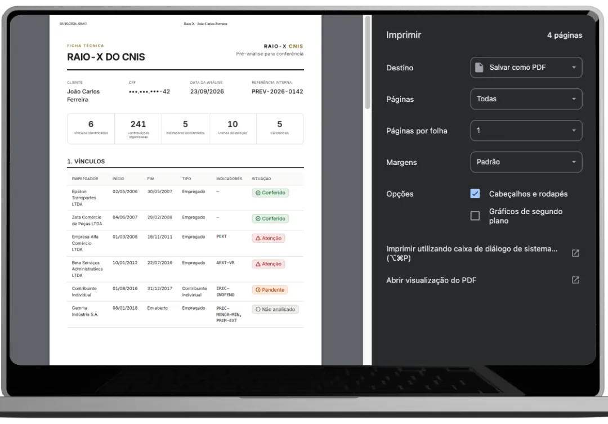
Visão organizada dos principais dados do CNIS
Identificação estruturada de vínculos
Organização de contribuições e remunerações
Visualização dos indicadores encontrados
Centralização dos pontos de atenção
Organização das pendências em uma única lista de trabalho
Espaço para observações profissionais
Marcação de itens como conferidos
Resumo visual do caso
Salvamento do Raio-X para consulta posterior
Geração de PDF
Impressão do Raio-X do cliente
Analisar CNIS com mais agilidade
Ter uma visão mais clara do caso
Reduzir o trabalho manual
Encontrar mais rápido o que merece atenção
Manter cada análise organizada
“Eu envio o CNIS e o sistema já organiza toda a análise sozinho. Quando termina, eu entro para revisar os pontos principais e gerar o relatório. Economiza muito trabalho manual.”
“Antes eu perdia muito tempo analisando o CNIS linha por linha e montando anotações. Agora eu envio o arquivo e já recebo vínculos, indicadores e pendências organizados para revisão.”
“O que mais gostei foi receber o CNIS pronto para conferência. O sistema organiza tudo, destaca o que merece atenção e eu só preciso revisar antes de salvar ou imprimir.”
“Antes eu fazia toda essa primeira análise manualmente. Hoje eu envio o CNIS, reviso o Raio-X que o sistema montou e sigo com o caso. Ficou muito mais rápido.”
Um sistema prático para você enviar o CNIS do cliente e receber a análise organizada, pronta para revisar, complementar e arquivar.
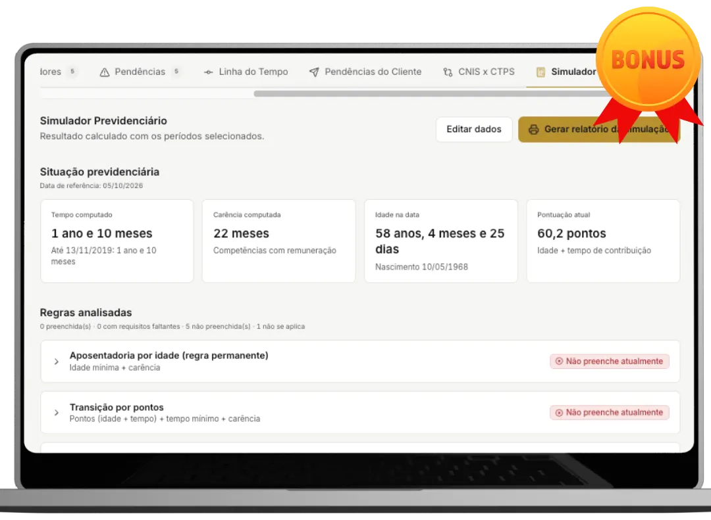
Simule automaticamente a situação previdenciária do cliente e visualize tempo de contribuição, carência, requisitos já cumpridos, requisitos que ainda faltam e regras de aposentadoria potencialmente aplicáveis.
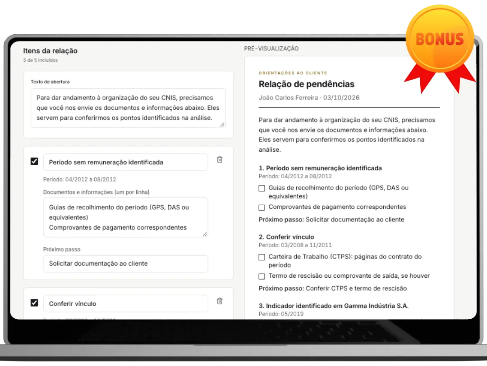
Transforme os pontos identificados na análise em uma relação clara de pendências, ajudando você a orientar o cliente sobre documentos, informações e próximos passos.
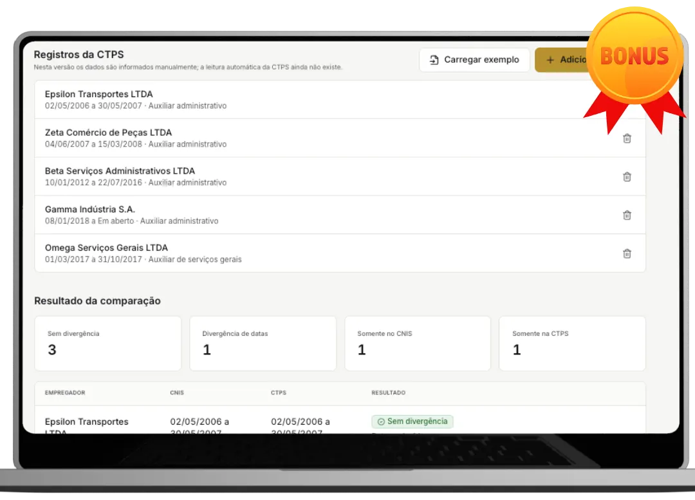
Compare as informações do CNIS com os dados da CTPS para facilitar a identificação de divergências, vínculos ou períodos que precisam de atenção.
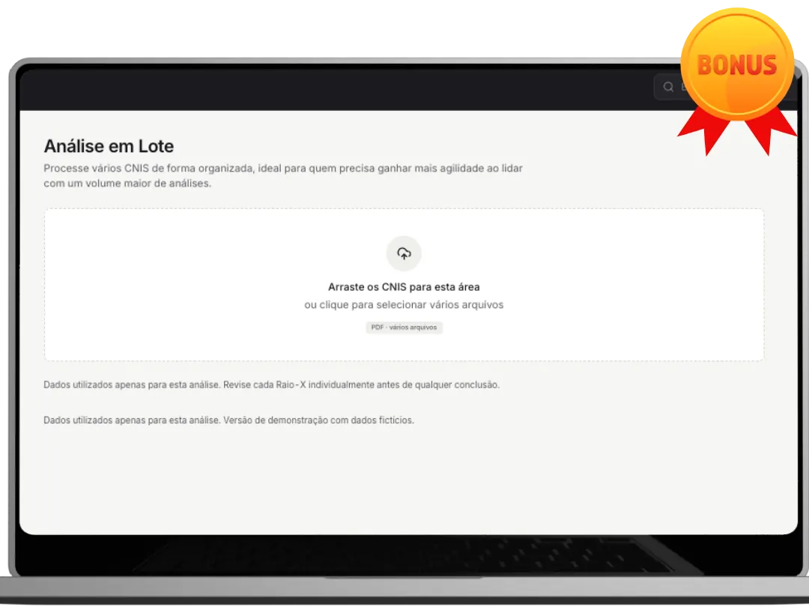
Processe vários CNIS de forma organizada, ideal para quem precisa ganhar mais agilidade ao lidar com um volume maior de análises.
Você recebe:
de R$37,90 por
R$27,90
ou 12x de R$2,86 no cartão
Você economiza R$10,00
Eu quero acessar o sistemade R$67,90 por
R$37,90
ou 12x de R$3,89 no cartão
Você economiza R$30,00
Eu quero acessar o sistema 90 Dias de GarantiaVocê pode acessar o Raio-X Automático do CNIS, explorar o sistema, enviar seus primeiros CNIS e conferir na prática como ele organiza vínculos, contribuições, indicadores e pontos de atenção. Se dentro de 90 dias você entender que o sistema não faz sentido para a sua rotina, basta solicitar o reembolso dentro desse período e receber 100% do valor investido de volta.
Clique no botão, escolha o plano ideal para você e finalize o pagamento com segurança.
Após a confirmação do pagamento, você receberá as instruções para acessar o Raio-X Automático do CNIS.
Selecione o arquivo, identifique o cliente e inicie uma nova análise dentro do sistema.
O sistema estrutura vínculos, contribuições, remunerações, indicadores e pontos de atenção para facilitar sua revisão profissional.
Confira os dados, adicione suas observações, marque os itens revisados e salve ou gere o Raio-X em PDF.